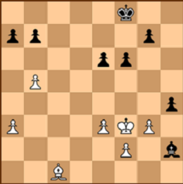

Chess Blips
The site with the most ensorcelling chess trivia!
Home
Scandals
Blunders
Contact
Infamous Blunders
——————————————————————————————————
Robert Fischer vs Boris Spassky
Akiba Rubinstein vs Aron Nimzowitsch
Alonso Zapata vs Viswanathan Anand
David Bronstein vs. Mikhail Botvinnik
Mikhail Chigorin vs Wilhelm Steinitz

Jul 11, 1972
Bobby Fischer vs Spassky: World Championship, Game 1, Reykjavik.
Perhaps the most famous of all blunders. The game was rapidly heading towards a quick draw when Bobby–to the amazement of every grandmaster watching in the tournament hall– suddenly captured a poisoned pawn. Spassky played the obvious 30.g3, sealing in the Bishop, and threatening to retreat his King to capture the piece. Soon Spassky was up a Bishop for two pawns and Fischer’s game was on the verge of collapse…
As well all know, Fischer won the third game and the fifth and the sixth and the eighth and the tenth before taking his foot off the accelerator and coasting to victory.
May 08, 1912
Akiba Rubinstein vs Aron Nimzowitsch, Chess Master Tournament, Vilnius.
The following position was reached with Nimzowitsch to move. Rubinstein, as white is threatening mate in 3 by the following sequence: 1.Qxf7+ Kh8 2.Qxf8+ Rxf8 3.Rxf8#.
Nimzowitsch needs to prevent this, e.g. by playing Rxf2.
But instead, 25. … Bc5??
Throwing the game away as Rubinstein now has a mate in 2 with 26. Qxf7 Kh8 27.Qxg7#. 26. Bd4?? Giving the game back! Both players miss the mate in two. Double blunder.
Jun 10, 1988
Alonso Zapata vs Viswanathan Anand, Correspondance Game.
The jewel of India, and India's first grandmaster, Viswanathan, made an uncharateristic blunder in his correspondance game vs Alonso Zapata.
Here, after 5. Nc3, Anand played 5. …,Bf5??
Zapata played 6. Qe2 and Anand resigned.The reason why he resigned because, after 7. …,Qe7 8.Nd5! and now Queen needs to leave e file. Qe6 is terrible because it loses to Nxc7+ and e5 square is guarded by f3 knight. Once the black queen leaves e file, d3 traps the knight on e4.
At the time of this game, Anand was about 2500 rated player still a very strong Grandmaster.
May 11, 1951
David Bronstein vs. Mikhail Botvinnik., World Championship, Moscow
This is the famous "slip of the hand game." Bronstein lost this one because he accidentally touched his King on move 57 and therefore by arbitration, had to move it, leaving Botvinnik free to monouvre his king to f2-g3 securing a pass pawn promotion. The line he had in mind was 57.Ne6+ Kf3 58.Ka4! e2 59.Nd4+ Kf2 60.Nxd2 Kxd2 61.Kxa5 Kd3 with an easy draw. "Ooops, my finger slipped and so did my crown."
After the match Bronstein stated: "We have here a typical position of dynamic equilibrium. Two other players would without doubt have gladly agreed to a draw. But in the 1951 match, on the initiative of Botvinnik and in my formulation, the rule of offering a draw only once was employed for the first time. And so neither of us wanted to suffer a moral defeat..."
Feb 28, 1892
Mikhail Chigorin vs Wilhelm Steinitz: World Championship, Havana.
Mikhail Chigorin achieved prominence in Russian chess. But in his 1892 match against Chigorin, it could be said he gained a sudden, astonishly profound ignorance of it.
This is a crucial game in the world championship match. Steinitz sacrificed a piece to get 2 rooks on the seventh rank, but Chigorin is winning.
Instead of playing the obvious (and good) 32. Rxb7, Chigorin had a major oversight and played 32. Bb4??. After 32... Rxh2+ white resigned. After 33. Kg1 would come 33... Rdg2#.